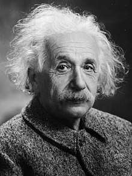
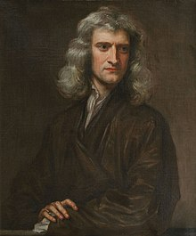
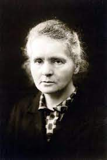

Albert Einstein (alemán: /ˈalbɛɐ̯t ˈʔaɪnʃtaɪn/; Ulm, Imperio alemán; 14 de marzo de 1879-Princeton, Estados Unidos; 18 de abril de 1955) fue un físico alemán de origen judío, nacionalizado después suizo, austriaco y estadounidense. Se le considera
el científico más importante, conocido y popular del siglo xx. En 1905, cuando era un joven físico desconocido, empleado en la Oficina de Patentes de Berna, publicó su teoría de la relatividad especial. En ella incorporó, en un marco
teórico simple fundamentado en postulados físicos sencillos, conceptos y fenómenos estudiados antes por Henri Poincaré y Hendrik Lorentz. Como una consecuencia lógica de esta teoría, dedujo la ecuación de la física más conocida a nivel
popular: la equivalencia masa-energía, E=mc². Ese año, publicó otros trabajos que sentarían algunas de las bases de la física estadística y de la mecánica cuántica. En 1915, presentó la teoría de la relatividad general, en la que reformuló
por completo el concepto de la gravedad.Una de las consecuencias fue el surgimiento del estudio científico del origen y la evolución del universo por la rama de la física denominada cosmología. En 1919, cuando las observaciones británicas
de un eclipse solar confirmaron sus predicciones acerca de la curvatura de la luz, fue idolatrado por la prensa.4 Einstein se convirtió en un icono popular de la ciencia mundialmente famoso, un privilegio al alcance de muy pocos científicos.
Sir Isaac Newton (Woolsthorpe, Lincolnshire; 25 de diciembre de 1642jul./ 4 de enero de 1643greg.-Kensington, Londres; 20 de marzojul./ 31 de marzo de 1727greg.) fue un físico, teólogo, inventor, alquimista y matemático inglés. Es autor de
los Philosophiæ naturalis principia mathematica, más conocidos como los Principia, donde describe la ley de la gravitación universal y estableció las bases de la mecánica clásica mediante las leyes que llevan su nombre. Entre sus otros
descubrimientos científicos destacan los trabajos sobre la naturaleza de la luz y la óptica (que se presentan principalmente en su obra Opticks), y en matemáticas, el desarrollo del cálculo infinitesimal. Newton comparte con Gottfried
Leibniz el crédito por el desarrollo del cálculo integral y diferencial, que utilizó para formular sus leyes de la física y astronomía. También contribuyó en otras áreas de las matemáticas, desarrollando el teorema del binomio y las fórmulas
de Newton-Cotes.
Maria Salomea Skłodowska-Curie,más conocida como Marie Curie o Madame Curie (Varsovia, 7 de noviembre de 1867-Passy, 4 de julio de 1934), fue una física y química polaca nacionalizada francesa. Pionera en el campo de la radiactividad, es la
primera y única persona en recibir dos premios Nobel en distintas especialidades científicas: Física y Química.También fue la primera mujer en ocupar el puesto de profesora en la Universidad de París y la primera en recibir sepultura con
honores en el Panteón de París por méritos propios en 1995.


